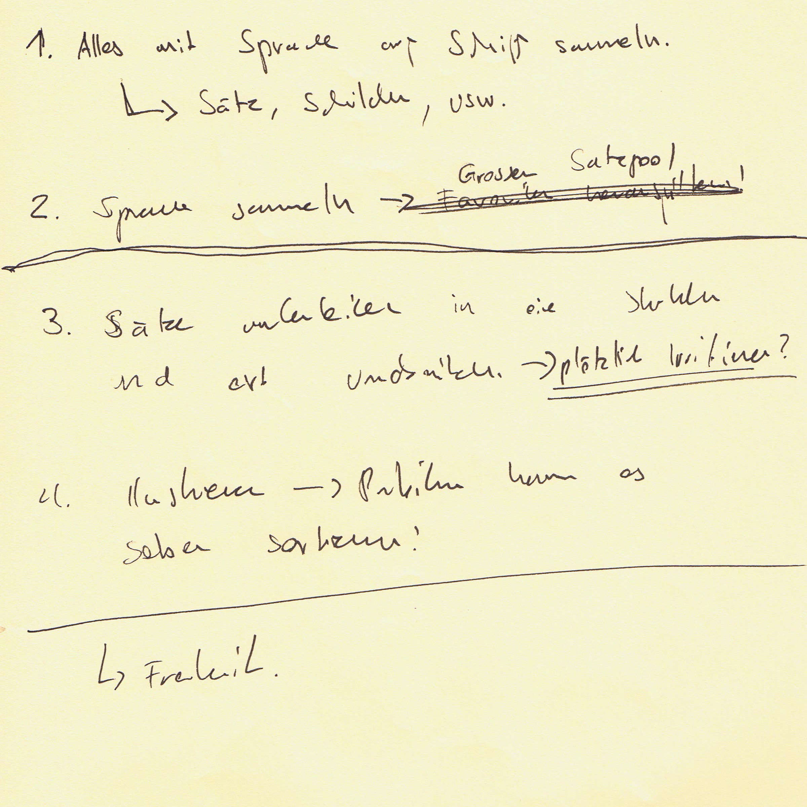

Im ersten Teil des Moduls "Experimentelles Erzählen" haben wir eine Vorstellungsrunde gemacht und anhand von fiktiven Posts etwas persönliches von uns Preis gegeben. Dazu mussten alle ein kurzes Statement auf einen Zettel schreiben. Anschliessend wurde im Plenum darüber diskutiert, was jeweils mit dem Post gemeint ist und in welchem Bezug er zu der jeweiligen Person steht. Auf diese Weise wurde meiner Ansicht nach ersichtlich, dass es sehr schwierig ist, anhand von einzelnen Aussagen und ohne Gesamtkontext wirklich fundierte Rückschlüsse auf die jeweilige Person zu ziehen.
Im zweiten Teil des Vormittags haben wir uns in Gruppen aufgeteilt und uns in einem kleinen Rollenspiel einmal als menschliche Kamera und einmal als Fotograf betätigt. Als menschliche Kamera wurde man mit geschlossenen Augen vom Fotografen an eine beliebige Stelle geführt und auf das Auslöse-Kommando hin wurden die Augen geöffnet und nach zuvor definierter Belichtungszeit (ca. 10 Sekunden) alles eingeprägt was im jeweiligen Sichtfeld zu sehen war. Mit diesen Bildern im Kopf ging es anschliessend daran, eine kleine Skizze des zuvor eingeprägten auf einem Dia-Positiv anzufertigen, dieses in der Gruppe anzuschauen und anhand von Begleittexten dazu eine kleine Geschichte zu erfinden. Diese Bildergeschichten wurden dann jeweils ohne den dazugehörigen Text an eine andere Gruppe weitergegeben, worauf diese zu den Bildern jeweils einen eigenen Text zu verfassen hatten. Auf diese Weise wurde meiner Ansicht nach verdeutlicht, das Text und Bild zusammen interagieren und Bilder ohne Text in den meisten Fällen eine eigenständige und individuelle Interpretation zulassen.
Begonnen haben wir den Vormittag mit einer kleinen Aufwärm-Übung in welcher ein Wort vorgegeben und dann der Reihe nach weitere Worte ergänzt wurden, so dass ein richtiger Satz entstand. Dieser Satz hatte genau gleich viele Wörter wie anwesende Studenten und er lautete: Ich pflanze einen Baum doch ich habe Zweifel ob er wächst.
Im Hinblick auf einen Ausflug mit dem Schiff konnte jeder für sich überlegt, mit welchem Themen-Komplex er sich bei dieser Gelegenheit beschäftigen möchte. Anschliessend wurden die verschiedenen Projekte im Plenum einzeln vorgestellt und Gruppen nach passenden und sich ergänzenden Vorhaben gebildet. Da ich mich gern weitestgehend mit dem Thema „Statistik“ beschäftigen wollte und mir der Vorschlag eines Mitstudenten mit dem dokumentieren von aufgeschnappten Sprachfetzen auf dem Schiff eine interessante Ausgangslage schien, schloss ich mich gern einer Zweiergruppe an, die sich in diesem Themenbereich bereits gefunden hatte. Anschliessend haben wir zu Dritt diskutiert, auf welche Weise wir auf dem Schiff vorgehen wollen und in welche Richtung sich unser Projekt bewegen soll. Darauf, dass die Sprache im Zentrum stehen soll haben wir uns schnell geeinigt und weiter beschlossen, alles was in diesem Zusammenhang auf dem Schiff zu finden ist zu dokumentieren. Als Gruppenname haben wir uns den Titel „Grundrauschen“ gegeben und als mögliches Produkt über ein Sprach-Spiel oder eine Geschichte nachgedacht, welche jeweils vom Betrachter aus bestehenden Wörtern generiert werden kann.
Im ersten Teil des Moduls "Experimentelles Erzählen" haben wir eine Vorstellungsrunde gemacht und anhand von fiktiven Posts etwas persönliches von uns Preis gegeben. Dazu mussten alle ein kurzes Statement auf einen Zettel schreiben. Anschliessend wurde im Plenum darüber diskutiert, was jeweils mit dem Post gemeint ist und in welchem Bezug er zu der jeweiligen Person steht. Auf diese Weise wurde meiner Ansicht nach ersichtlich, dass es sehr schwierig ist, anhand von einzelnen Aussagen und ohne Gesamtkontext wirklich fundierte Rückschlüsse auf die jeweilige Person zu ziehen.
Begonnen haben wir den Vormittag mit einer kleinen Aufwärm-Übung in welcher ein Wort vorgegeben und dann der Reihe nach weitere Worte ergänzt wurden, so dass ein richtiger Satz entstand. Dieser Satz hatte genau gleich viele Wörter wie anwesende Studenten und er lautete: Ich pflanze einen Baum doch ich habe Zweifel ob er wächst.
Im Hinblick auf einen Ausflug mit dem Schiff konnte jeder für sich überlegt, mit welchem Themen-Komplex er sich bei dieser Gelegenheit beschäftigen möchte. Anschliessend wurden die verschiedenen Projekte im Plenum einzeln vorgestellt und Gruppen nach passenden und sich ergänzenden Vorhaben gebildet. Da ich mich gern weitestgehend mit dem Thema „Statistik“ beschäftigen wollte und mir der Vorschlag eines Mitstudenten mit dem dokumentieren von aufgeschnappten Sprachfetzen auf dem Schiff eine interessante Ausgangslage schien, schloss ich mich gern einer Zweiergruppe an, die sich in diesem Themenbereich bereits gefunden hatte. Anschliessend haben wir zu Dritt diskutiert, auf welche Weise wir auf dem Schiff vorgehen wollen und in welche Richtung sich unser Projekt bewegen soll. Darauf, dass die Sprache im Zentrum stehen soll haben wir uns schnell geeinigt und weiter beschlossen, alles was in diesem Zusammenhang auf dem Schiff zu finden ist zu dokumentieren. Als Gruppenname haben wir uns den Titel „Grundrauschen“ gegeben und als mögliches Produkt über ein Sprach-Spiel oder eine Geschichte nachgedacht, welche jeweils vom Betrachter aus bestehenden Wörtern generiert werden kann.